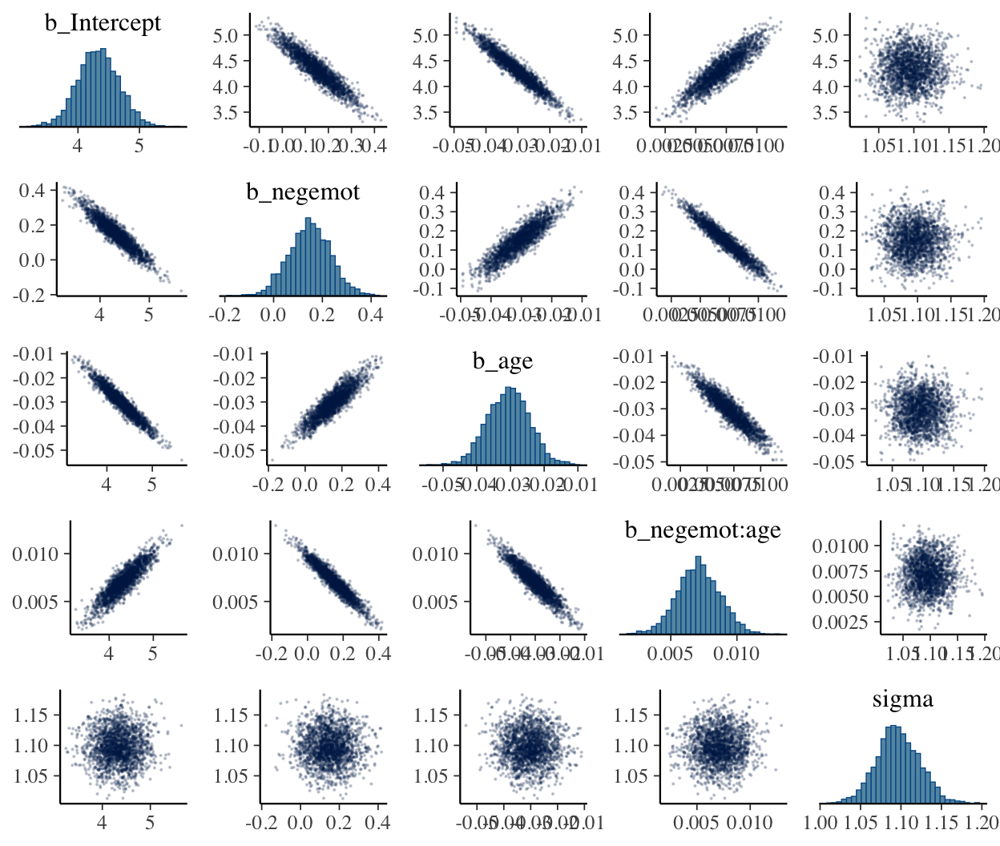
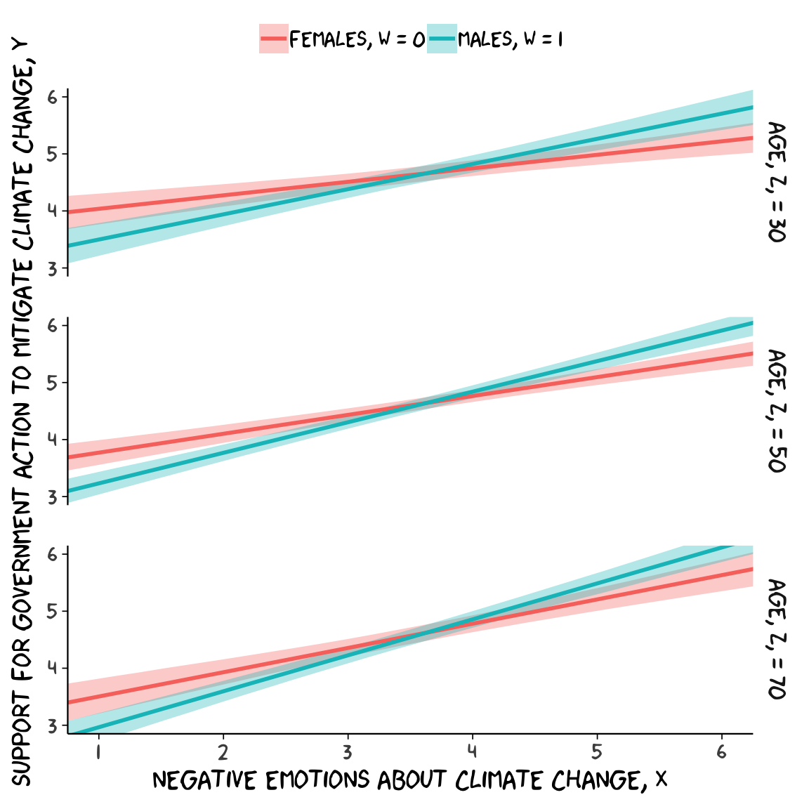
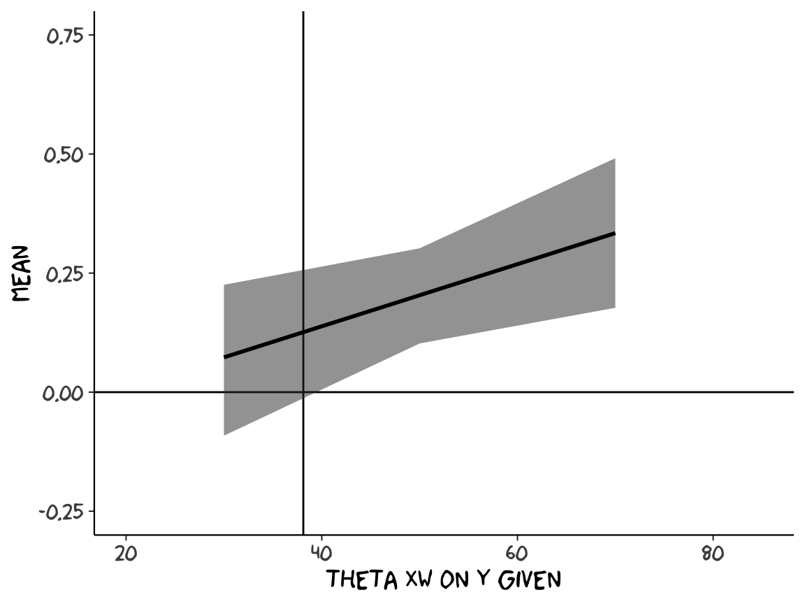
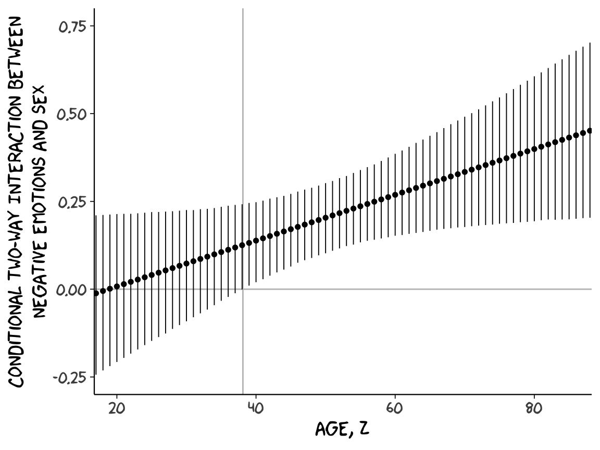

9 Some Myths and Additional Extensions of Moderation Analysis
9.1 Truths and myths about mean-centering
Here we load a couple necessary packages, load the data, and take a glimpse().
library(tidyverse)
glbwarm <- read_csv("data/glbwarm/glbwarm.csv")
glimpse(glbwarm)
#> Observations: 815
#> Variables: 7
#> $ govact <dbl> 3.6, 5.0, 6.6, 1.0, 4.0, 7.0, 6.8, 5.6, 6.0, 2.6, 1.4, 5.6, 7.0, 3.8, 3.4, 4.2, 1.0...
#> $ posemot <dbl> 3.67, 2.00, 2.33, 5.00, 2.33, 1.00, 2.33, 4.00, 5.00, 5.00, 1.00, 4.00, 1.00, 5.67,...
#> $ negemot <dbl> 4.67, 2.33, 3.67, 5.00, 1.67, 6.00, 4.00, 5.33, 6.00, 2.00, 1.00, 4.00, 5.00, 4.67,...
#> $ ideology <int> 6, 2, 1, 1, 4, 3, 4, 5, 4, 7, 6, 4, 2, 4, 5, 2, 6, 4, 2, 4, 4, 2, 6, 4, 4, 3, 4, 5,...
#> $ age <int> 61, 55, 85, 59, 22, 34, 47, 65, 50, 60, 71, 60, 71, 59, 32, 36, 69, 70, 41, 48, 38,...
#> $ sex <int> 0, 0, 1, 0, 1, 0, 1, 1, 1, 1, 1, 0, 1, 0, 1, 1, 1, 0, 0, 0, 0, 1, 1, 1, 1, 1, 1, 0,...
#> $ partyid <int> 2, 1, 1, 1, 1, 2, 1, 1, 2, 3, 2, 1, 1, 1, 1, 1, 2, 3, 1, 3, 2, 1, 3, 2, 1, 1, 1, 3,...Before we fit our models, we’ll go ahead and make our mean-centered predictors, negemot_c and age_c.
glbwarm <-
glbwarm %>%
mutate(negemot_c = negemot - mean(negemot),
age_c = age - mean(age))Now we’re ready to fit Models 1 and 2. But before we do, it’s worth repeating part of the text:
Mean-centering has been recommended in a few highly regarded books on regression analysis (e.g., Aiken & West, 1991; Cohen et al., 2003), and several explanations have been offered for why mean-centering should be undertaken prior to computation of the product and model estimation. The explanation that seems to have resulted in the most misunderstanding is that \(X\) and \(W\) are likely to be highly correlated with \(XW\) and this will produce estimation problems caused by collinearity and result in poor or “strange” estimates of regression coefficients, large standard errors, and reduced power of the statistical test of the interaction. But his is, in large part, simply a myth. (p. 304)
Let’s load brms.
library(brms)As we’ll see in just a bit, there are some important reasons for Bayesians using HMC to mean center that wouldn’t pop up within the OLS paradigm. First let’s fit model1 and model2.
model1 <-
brm(data = glbwarm, family = gaussian,
govact ~ 1 + negemot + age + negemot:age,
chains = 4, cores = 4)
model2 <-
update(model1, newdata = glbwarm,
govact ~ 1 + negemot_c + age_c + negemot_c:age_c,
chains = 4, cores = 4)As with Hayes’s OLS models, our HMC models yield the same Bayesian \(R^2\) distributions, within simulation error.
bayes_R2(model1) %>% round(digits = 3)
#> Estimate Est.Error Q2.5 Q97.5
#> R2 0.354 0.021 0.31 0.393
bayes_R2(model2) %>% round(digits = 3)
#> Estimate Est.Error Q2.5 Q97.5
#> R2 0.353 0.022 0.308 0.394Our model summaries also correspond nicely with those in Table 9.1.
print(model1, digits = 3)
#> Family: gaussian
#> Links: mu = identity; sigma = identity
#> Formula: govact ~ 1 + negemot + age + negemot:age
#> Data: glbwarm (Number of observations: 815)
#> Samples: 4 chains, each with iter = 2000; warmup = 1000; thin = 1;
#> total post-warmup samples = 4000
#>
#> Population-Level Effects:
#> Estimate Est.Error l-95% CI u-95% CI Eff.Sample Rhat
#> Intercept 4.325 0.333 3.681 4.962 1535 1.007
#> negemot 0.149 0.085 -0.017 0.321 1504 1.006
#> age -0.030 0.006 -0.042 -0.018 1511 1.006
#> negemot:age 0.007 0.002 0.004 0.010 1513 1.006
#>
#> Family Specific Parameters:
#> Estimate Est.Error l-95% CI u-95% CI Eff.Sample Rhat
#> sigma 1.097 0.028 1.042 1.153 2272 1.002
#>
#> Samples were drawn using sampling(NUTS). For each parameter, Eff.Sample
#> is a crude measure of effective sample size, and Rhat is the potential
#> scale reduction factor on split chains (at convergence, Rhat = 1).
print(model2, digits = 3)
#> Family: gaussian
#> Links: mu = identity; sigma = identity
#> Formula: govact ~ negemot_c + age_c + negemot_c:age_c
#> Data: glbwarm (Number of observations: 815)
#> Samples: 4 chains, each with iter = 2000; warmup = 1000; thin = 1;
#> total post-warmup samples = 4000
#>
#> Population-Level Effects:
#> Estimate Est.Error l-95% CI u-95% CI Eff.Sample Rhat
#> Intercept 4.597 0.039 4.522 4.672 3628 1.000
#> negemot_c 0.500 0.025 0.450 0.549 3603 1.000
#> age_c -0.005 0.002 -0.010 -0.001 4000 1.000
#> negemot_c:age_c 0.007 0.002 0.004 0.010 4000 1.000
#>
#> Family Specific Parameters:
#> Estimate Est.Error l-95% CI u-95% CI Eff.Sample Rhat
#> sigma 1.097 0.028 1.046 1.152 2918 1.002
#>
#> Samples were drawn using sampling(NUTS). For each parameter, Eff.Sample
#> is a crude measure of effective sample size, and Rhat is the potential
#> scale reduction factor on split chains (at convergence, Rhat = 1).However, notice the ‘Eff.Sample’ columns. The values for model2 were substantially larger than those for model1. ‘Eff.Sample’ is Bürkner’s term for the number of effective samples. Recall that because we’ve been using brms defaults, we have 4 HMC chains, each of which contains 2000 draws (iterations), the first 1000 of which are warmup values. After we discard the warmup values, that leaves 1000 draws from each chain–4000 total. As it turns out, Markov chains, and thus HMC chains, are typically autocorrelated, which means that each draw is partially dependent on the previous draw. Ideally, the autocorrelations are near zero. That’s often not the case.
The bayesplot package offers a variety of diagnostic plots. Here we’ll use the mcmc_acf() function to make autocorrelation plots for all model parameters. Note that when we add add_chain = T to brms::posterior_samples(), we add an index to the data that allows us to keep track of which iteration comes from which chain. That index will come in handy for our mcmc_acf() plots.
But before we get there, we’ll be using an xkcd-inspired theme with help from the xkcd package for our plots in this chapter.
# install.packages("xkcd", dependencies = T)
library(xkcd)If you haven’t used the xkcd package, before, you might also need to take a few extra steps outlined here, part of which requires help from the extrafont package,
library(extrafont)
download.file("http://simonsoftware.se/other/xkcd.ttf",
dest = "xkcd.ttf", mode = "wb")
system("mkdir ~/.fonts")
system("cp xkcd.ttf ~/.fonts")
# This line of code returned an error message
# font_import(pattern = "[X/x]kcd", prompt = FALSE)
# This line from (https://stackoverflow.com/questions/49221040/error-in-font-import-while-installing-xkcd-font) fixed the problem
font_import(path = "~/.fonts", pattern = "[X/x]kcd", prompt=FALSE)
fonts()
fonttable()
if(.Platform$OS.type != "unix") {
## Register fonts for Windows bitmap output
loadfonts(device="win")
} else {
loadfonts()
}After installing, I still experienced error messages, which were alleviated after I followed these steps outlined by Remi.b. You may or may not need them.
But anyways, here are our mcmc_acf() plots.
library(bayesplot)
post1 <- posterior_samples(model1, add_chain = T)
mcmc_acf(post1,
pars = c("b_Intercept", "b_negemot", "b_age", "b_negemot:age", "sigma"),
lags = 4) +
theme_xkcd()
post2 <- posterior_samples(model2, add_chain = T)
mcmc_acf(post2,
pars = c("b_Intercept", "b_negemot_c", "b_age_c", "b_negemot_c:age_c", "sigma"),
lags = 4) +
theme_xkcd() 
As it turns out, theme_xkcd() can’t handle special characters like “_“, so it returns rectangles instead. So it goes…
But again, high autocorrelations in the HMC chains have consequences for the effective sample size. In the Visual MCMC diagnostics using the bayesplot package vignette, Gabry wrote:
The effective sample size is an estimate of the number of independent draws from the posterior distribution of the estimand of interest. Because the draws within a Markov chain are not independent if there is autocorrelation, the effective sample size, \(n_{eff}\), will be smaller than the total sample size, \(N\). The larger the ratio of \(n_{eff}\) to \(N\) the better.
The ‘Eff.Sample’ values were all close to 4000 with model2 and the autocorrelations were very low, too. The reverse was true for model1. The upshot is that even though we have 4000 samples for each parameter, those samples don’t necessarily give us the same quality of information fully independent samples would. ‘Eff.Sample’ helps you determine how concerned you should be. And, as it turns out, things like centering can help increase a models ‘Eff.Sample’ values.
Wading in further, we can use the neff_ratio() function to collect the \(n_{eff}\) to \(N\) ratio for each model parameter and then use mcmc_neff() to make a visual diagnostic. Here we do so for model1 and model2.
ratios_model1 <-
neff_ratio(model1,
pars = c("b_Intercept", "b_negemot", "b_age", "b_negemot:age", "sigma"))
ratios_model2 <-
neff_ratio(model2,
pars = c("b_Intercept", "b_negemot_c", "b_age_c", "b_negemot_c:age_c", "sigma"))
mcmc_neff(ratios_model1) +
yaxis_text(hjust = 0) +
theme_xkcd()
mcmc_neff(ratios_model2) +
yaxis_text(hjust = 0) +
theme_xkcd()
Although none of the \(n_{eff}\) to \(N\) ratios were in the shockingly-low range for either model, there were substantially closer to 1 for model2.
In addition to autocorrelations and \(n_{eff}\) to \(N\) ratios, there is also the issue that the parameters in the model can themselves be correlated. If you like a visual approach, you can use brms::pairs() to retrieve histograms for each parameter along with scatter plots showing the shape of their correlations. Here we’ll use the off_diag_args argument to customize some of the plot settings.
pairs(model1,
off_diag_args = list(size = 1/10,
alpha = 1/5))
pairs(model2,
off_diag_args = list(size = 1/10,
alpha = 1/5))
When fitting models with HMC, centering can make a difference for the parameter correlations. If you prefer a more numeric approach, vcov() will yield the variance/covariance matrix–or correlation matrix when using correlation = T–for the parameters in a model.
vcov(model1, correlation = T) %>% round(digits = 2)
#> Intercept negemot age negemot:age
#> Intercept 1.00 -0.93 -0.96 0.88
#> negemot -0.93 1.00 0.89 -0.96
#> age -0.96 0.89 1.00 -0.93
#> negemot:age 0.88 -0.96 -0.93 1.00
vcov(model2, correlation = T) %>% round(digits = 2)
#> Intercept negemot_c age_c negemot_c:age_c
#> Intercept 1.00 -0.03 0.03 0.05
#> negemot_c -0.03 1.00 0.05 -0.09
#> age_c 0.03 0.05 1.00 0.01
#> negemot_c:age_c 0.05 -0.09 0.01 1.00And so wait, what does that even mean for a parameter to correlate with another parameter? you might ask. Fair enough. Let’s compute a correlation step by step. First, posterior_samples():
post <- posterior_samples(model1)
head(post)
#> b_Intercept b_negemot b_age b_negemot:age sigma lp__
#> 1 3.90 0.267 -0.0266 0.00602 1.13 -1239
#> 2 4.23 0.199 -0.0317 0.00708 1.08 -1237
#> 3 3.86 0.256 -0.0197 0.00453 1.07 -1237
#> 4 3.97 0.248 -0.0236 0.00514 1.07 -1236
#> 5 3.95 0.239 -0.0224 0.00514 1.06 -1236
#> 6 4.07 0.228 -0.0257 0.00575 1.14 -1237Now we’ve put our posterior iterations into a data object, post, we can make a scatter plot of two parameters. Here we’ll choose b_negemot and the interaction coefficient, b_negemot:age.
post %>%
ggplot(aes(x = b_negemot, y = `b_negemot:age`)) +
geom_point(size = 1/10, alpha = 1/5) +
labs(subtitle = "Each dot is the parameter pair\nfrom a single iteration. Looking\nacross the 4,000 total posterior\niterations, it becomes clear the\ntwo parameters are highly\nnegatively correlated.") +
theme_xkcd()
And indeed, the Pearson’s correlation is:
cor(post$b_negemot, post$`b_negemot:age`)
#> [1] -0.955And what was that part from the vcov() output, again?
vcov(model1, correlation = T)["negemot", "negemot:age"]
#> [1] -0.955Boom! That’s where the correlations come from.
This entire topic of HMC diagnostics can seem baffling, especially when compared to the simplicity of OLS. If this is your first introduction, you might want to watch lectures 10 and 11 from McElreath’s Statistical Rethinking Fall 2017 lecture series. Accordingly, you might check out chapter 8 of his Statistical Rethinking text and my project explaining how to reproduce the analyses in that chapter in brms.
9.1.1 The effect of mean-centering on multicollinearity and the standard error of \(b_{3}\).
This can be difficult to keep track of, but what we just looked at were the correlations among model parameters. These are not the same as correlations among variables. As such, those correlations are not the same as those in Table 9.2. But we can get those, too. First we’ll have to do a little more data processing to get all the necessary mean-centered variables and standardized variables.
glbwarm <-
glbwarm %>%
mutate(negemot_x_age = negemot*age,
negemot_c_x_age_c = negemot_c*age_c,
negemot_z = (negemot - mean(negemot))/sd(negemot),
age_z = (age - mean(age) )/sd(age)) %>%
mutate(negemot_z_x_age_z = negemot_z*age_z)And recall that to get our sweet Bayesian correlations, we use the multivariate cbind() syntax to fit an intercepts-only model. Here we do that for all three of the Table 9.2 sections.
correlations1 <-
brm(data = glbwarm, family = gaussian,
cbind(negemot, age, negemot_x_age) ~ 1,
chains = 4, cores = 4)
correlations2 <-
brm(data = glbwarm, family = gaussian,
cbind(negemot_c, age_c, negemot_c_x_age_c) ~ 1,
chains = 4, cores = 4)
correlations3 <-
brm(data = glbwarm, family = gaussian,
cbind(negemot_z, age_z, negemot_z_x_age_z) ~ 1,
chains = 4, cores = 4)Their summaries:
print(correlations1, digits = 3)
#> Family: MV(gaussian, gaussian, gaussian)
#> Links: mu = identity; sigma = identity
#> mu = identity; sigma = identity
#> mu = identity; sigma = identity
#> Formula: negemot ~ 1
#> age ~ 1
#> negemot_x_age ~ 1
#> Data: glbwarm (Number of observations: 815)
#> Samples: 4 chains, each with iter = 2000; warmup = 1000; thin = 1;
#> total post-warmup samples = 4000
#>
#> Population-Level Effects:
#> Estimate Est.Error l-95% CI u-95% CI Eff.Sample Rhat
#> negemot_Intercept 3.556 0.051 3.455 3.657 3301 1.000
#> age_Intercept 49.541 0.586 48.405 50.709 3610 1.002
#> negemotxage_Intercept 174.758 3.361 168.213 181.396 2871 1.001
#>
#> Family Specific Parameters:
#> Estimate Est.Error l-95% CI u-95% CI Eff.Sample Rhat
#> sigma_negemot 1.531 0.038 1.459 1.607 2662 1.000
#> sigma_age 16.362 0.402 15.605 17.174 3120 1.000
#> sigma_negemotxage 97.525 2.419 92.870 102.556 2257 1.001
#> rescor(negemot,age) -0.058 0.036 -0.127 0.012 2914 1.000
#> rescor(negemot,negemotxage) 0.766 0.015 0.736 0.793 2155 1.000
#> rescor(age,negemotxage) 0.547 0.025 0.497 0.594 4000 1.000
#>
#> Samples were drawn using sampling(NUTS). For each parameter, Eff.Sample
#> is a crude measure of effective sample size, and Rhat is the potential
#> scale reduction factor on split chains (at convergence, Rhat = 1).
print(correlations2, digits = 3)
#> Family: MV(gaussian, gaussian, gaussian)
#> Links: mu = identity; sigma = identity
#> mu = identity; sigma = identity
#> mu = identity; sigma = identity
#> Formula: negemot_c ~ 1
#> age_c ~ 1
#> negemot_c_x_age_c ~ 1
#> Data: glbwarm (Number of observations: 815)
#> Samples: 4 chains, each with iter = 2000; warmup = 1000; thin = 1;
#> total post-warmup samples = 4000
#>
#> Population-Level Effects:
#> Estimate Est.Error l-95% CI u-95% CI Eff.Sample Rhat
#> negemotc_Intercept 0.000 0.054 -0.108 0.108 4000 1.000
#> agec_Intercept -0.002 0.569 -1.146 1.094 4000 1.000
#> negemotcxagec_Intercept -1.425 0.835 -3.059 0.172 4000 0.999
#>
#> Family Specific Parameters:
#> Estimate Est.Error l-95% CI u-95% CI Eff.Sample Rhat
#> sigma_negemotc 1.533 0.040 1.456 1.614 4000 1.000
#> sigma_agec 16.364 0.408 15.594 17.182 4000 0.999
#> sigma_negemotcxagec 24.233 0.592 23.121 25.426 4000 0.999
#> rescor(negemotc,agec) -0.057 0.035 -0.126 0.012 4000 0.999
#> rescor(negemotc,negemotcxagec) 0.092 0.034 0.024 0.157 4000 1.000
#> rescor(agec,negemotcxagec) -0.015 0.035 -0.084 0.053 4000 1.000
#>
#> Samples were drawn using sampling(NUTS). For each parameter, Eff.Sample
#> is a crude measure of effective sample size, and Rhat is the potential
#> scale reduction factor on split chains (at convergence, Rhat = 1).
print(correlations3, digits = 3)
#> Family: MV(gaussian, gaussian, gaussian)
#> Links: mu = identity; sigma = identity
#> mu = identity; sigma = identity
#> mu = identity; sigma = identity
#> Formula: negemot_z ~ 1
#> age_z ~ 1
#> negemot_z_x_age_z ~ 1
#> Data: glbwarm (Number of observations: 815)
#> Samples: 4 chains, each with iter = 2000; warmup = 1000; thin = 1;
#> total post-warmup samples = 4000
#>
#> Population-Level Effects:
#> Estimate Est.Error l-95% CI u-95% CI Eff.Sample Rhat
#> negemotz_Intercept 0.000 0.034 -0.066 0.068 4000 0.999
#> agez_Intercept -0.000 0.035 -0.068 0.068 4000 0.999
#> negemotzxagez_Intercept -0.057 0.034 -0.124 0.010 4000 0.999
#>
#> Family Specific Parameters:
#> Estimate Est.Error l-95% CI u-95% CI Eff.Sample Rhat
#> sigma_negemotz 1.003 0.025 0.956 1.053 4000 1.000
#> sigma_agez 1.003 0.025 0.956 1.053 4000 0.999
#> sigma_negemotzxagez 0.971 0.023 0.928 1.017 4000 1.000
#> rescor(negemotz,agez) -0.056 0.035 -0.126 0.013 4000 0.999
#> rescor(negemotz,negemotzxagez) 0.092 0.035 0.022 0.161 4000 0.999
#> rescor(agez,negemotzxagez) -0.014 0.035 -0.083 0.053 4000 1.000
#>
#> Samples were drawn using sampling(NUTS). For each parameter, Eff.Sample
#> is a crude measure of effective sample size, and Rhat is the potential
#> scale reduction factor on split chains (at convergence, Rhat = 1).A more condensed way to get that information might be with the VarCorr() function. Just make sure to tack $residual__$cor onto the end.
VarCorr(correlations1)$residual__$cor %>%
round(digits = 3)
#> , , negemot
#>
#> Estimate Est.Error Q2.5 Q97.5
#> negemot 1.000 0.000 1.000 1.000
#> age -0.058 0.036 -0.127 0.012
#> negemotxage 0.766 0.015 0.736 0.793
#>
#> , , age
#>
#> Estimate Est.Error Q2.5 Q97.5
#> negemot -0.058 0.036 -0.127 0.012
#> age 1.000 0.000 1.000 1.000
#> negemotxage 0.547 0.025 0.497 0.594
#>
#> , , negemotxage
#>
#> Estimate Est.Error Q2.5 Q97.5
#> negemot 0.766 0.015 0.736 0.793
#> age 0.547 0.025 0.497 0.594
#> negemotxage 1.000 0.000 1.000 1.000For the sake of space, I’ll let you check that out for correlations2 and correlations3. If you’re tricky with your VarCorr() indexing, you can also get the model-implied variances.
VarCorr(correlations1)$residual__$cov[1, , "negemot"] %>% round(digits = 3)
#> Estimate Est.Error Q2.5 Q97.5
#> 2.346 0.116 2.128 2.584
VarCorr(correlations1)$residual__$cov[2, , "age"] %>% round(digits = 3)
#> Estimate Est.Error Q2.5 Q97.5
#> 267.9 13.2 243.5 294.9
VarCorr(correlations1)$residual__$cov[3, , "negemotxage"] %>% round(digits = 3)
#> Estimate Est.Error Q2.5 Q97.5
#> 9517 473 8625 10518And if you’re like totally lost with all this indexing, you might code VarCorr(correlations1) %>% str() and spend a little time looking at what VarCorr() produces.
On page 309, Hayes explained why the OLS variance for \(b_{3}\) is unaffected by mean centering. The story was similar for our HMC model, too:
fixef(model1)["negemot:age", "Est.Error"]
#> [1] 0.00159
fixef(model2)["negemot_c:age_c", "Est.Error"]
#> [1] 0.00162For more details, you might also see the 28.11. Standardizing Predictors and Outputs subsection of the Stan Modeling Language User’s Guide and Reference Manual, 2.17.0–Stan, of course, being the computational engine underneath our brms hood.
9.1.2 The effect of mean-centering on \(b_{1}\), \(b_{2}\), and their standard errors posterior \(SD\)s.
If you only care about posterior means, you can reproduce the results at the bottom of page 310 like:
fixef(model1)["negemot", 1] +
fixef(model1)["negemot:age", 1]*mean(glbwarm$age)
#> [1] 0.501But we’re proper Bayesians and like a summary of the spread in the posterior. So we’ll evoke posterior_samples() and the other usual steps.
post <- posterior_samples(model1)
post %>%
transmute(our_contidional_effect_given_W_bar = b_negemot + `b_negemot:age`*mean(glbwarm$age)) %>%
summarize(mean = mean(our_contidional_effect_given_W_bar),
sd = sd(our_contidional_effect_given_W_bar)) %>%
round(digits = 3)
#> mean sd
#> 1 0.501 0.025And note how the standard error Hayes computed at the top of page 311 corresponds nicely with the posterior \(SD\) we just computed. Hayes employed a fancy formula; we just used sd().
9.1.3 The centering option in PROCESS.
I’m not aware of a similar function in brms. You’ll have to use your data wrangling skills.
9.2 The estimation and interpretation of standardized regression coefficients in a moderation analysis
9.2.1 Variant 1.
We’ve already computed standardized predictors. Now we just need to standardize the criterion, govact.
glbwarm <-
glbwarm %>%
mutate(govact_z = (govact - mean(govact))/sd(govact))Fit:
model3 <-
update(model1, newdata = glbwarm,
govact_z ~ 1 + negemot_z + age_z + negemot_z:age_z,
chains = 4, cores = 4)bayes_R2(model3) %>% round(digits = 3)
#> Estimate Est.Error Q2.5 Q97.5
#> R2 0.354 0.021 0.311 0.395print(model3, digits = 3)
#> Family: gaussian
#> Links: mu = identity; sigma = identity
#> Formula: govact_z ~ negemot_z + age_z + negemot_z:age_z
#> Data: glbwarm (Number of observations: 815)
#> Samples: 4 chains, each with iter = 2000; warmup = 1000; thin = 1;
#> total post-warmup samples = 4000
#>
#> Population-Level Effects:
#> Estimate Est.Error l-95% CI u-95% CI Eff.Sample Rhat
#> Intercept 0.008 0.028 -0.046 0.061 4000 1.000
#> negemot_z 0.563 0.028 0.507 0.617 4000 0.999
#> age_z -0.063 0.029 -0.119 -0.008 4000 1.000
#> negemot_z:age_z 0.130 0.029 0.073 0.188 4000 0.999
#>
#> Family Specific Parameters:
#> Estimate Est.Error l-95% CI u-95% CI Eff.Sample Rhat
#> sigma 0.806 0.020 0.768 0.847 4000 0.999
#>
#> Samples were drawn using sampling(NUTS). For each parameter, Eff.Sample
#> is a crude measure of effective sample size, and Rhat is the potential
#> scale reduction factor on split chains (at convergence, Rhat = 1).9.2.2 Variant 2.
This time we need to standardize our interaction term, negemot_x_age_z, by hand.
glbwarm <-
glbwarm %>%
mutate(negemot_x_age_z = (negemot_x_age - mean(negemot_x_age))/sd(negemot_x_age))Now we’re ready to fit.
model4 <-
update(model1, newdata = glbwarm,
govact_z ~ 1 + negemot_z + age_z + negemot_x_age_z,
chains = 4, cores = 4)bayes_R2(model4) %>% round(digits = 3)
#> Estimate Est.Error Q2.5 Q97.5
#> R2 0.354 0.022 0.31 0.396print(model4, digits = 3)
#> Family: gaussian
#> Links: mu = identity; sigma = identity
#> Formula: govact_z ~ negemot_z + age_z + negemot_x_age_z
#> Data: glbwarm (Number of observations: 815)
#> Samples: 4 chains, each with iter = 2000; warmup = 1000; thin = 1;
#> total post-warmup samples = 4000
#>
#> Population-Level Effects:
#> Estimate Est.Error l-95% CI u-95% CI Eff.Sample Rhat
#> Intercept -0.000 0.028 -0.055 0.054 2814 1.002
#> negemot_z 0.169 0.094 -0.019 0.358 1377 1.002
#> age_z -0.365 0.072 -0.509 -0.222 1397 1.003
#> negemot_x_age_z 0.506 0.113 0.284 0.728 1371 1.002
#>
#> Family Specific Parameters:
#> Estimate Est.Error l-95% CI u-95% CI Eff.Sample Rhat
#> sigma 0.806 0.020 0.768 0.848 2705 1.001
#>
#> Samples were drawn using sampling(NUTS). For each parameter, Eff.Sample
#> is a crude measure of effective sample size, and Rhat is the potential
#> scale reduction factor on split chains (at convergence, Rhat = 1).The results correspond nicely to those in Table 9.1.
9.3 A caution on manual centering and standardization
It’s worthwhile considering the issue of listwise deletion when data are partially missing. The brms default is to delete rows with missingness, “NA” in R, for the predictors. However, brms allows users to perform one-step Bayesian imputation for missing values using the mi() syntax. First we’ll fit see what happens when you fit a model in brms when some of the negemot_z values are missing, but without using the mi() syntax. And of course before we do that, we’ll make a negemot_z_missing variable, which is identical to negemot_z, but about 10% of the values are missing.
set.seed(815)
glbwarm <-
glbwarm %>%
mutate(missing = rbinom(n = 815, size = 1, prob = .1)) %>%
mutate(negemot_z_missing = ifelse(missing == 1, NA, negemot_z))If you’ve never used rbinom() before, code ?rbinom or look it up in your favorite web search engine. Here’s our listwise deletion model, which corresponds to what you’d get from a typical OLS-based program.
model5 <-
update(model3, newdata = glbwarm,
govact_z ~ 1 + negemot_z_missing + age_z + negemot_z_missing:age_z,
chains = 4, cores = 4)Let’s compare the listwise deletion results with the model based on all the data.
print(model3)
#> Family: gaussian
#> Links: mu = identity; sigma = identity
#> Formula: govact_z ~ negemot_z + age_z + negemot_z:age_z
#> Data: glbwarm (Number of observations: 815)
#> Samples: 4 chains, each with iter = 2000; warmup = 1000; thin = 1;
#> total post-warmup samples = 4000
#>
#> Population-Level Effects:
#> Estimate Est.Error l-95% CI u-95% CI Eff.Sample Rhat
#> Intercept 0.01 0.03 -0.05 0.06 4000 1.00
#> negemot_z 0.56 0.03 0.51 0.62 4000 1.00
#> age_z -0.06 0.03 -0.12 -0.01 4000 1.00
#> negemot_z:age_z 0.13 0.03 0.07 0.19 4000 1.00
#>
#> Family Specific Parameters:
#> Estimate Est.Error l-95% CI u-95% CI Eff.Sample Rhat
#> sigma 0.81 0.02 0.77 0.85 4000 1.00
#>
#> Samples were drawn using sampling(NUTS). For each parameter, Eff.Sample
#> is a crude measure of effective sample size, and Rhat is the potential
#> scale reduction factor on split chains (at convergence, Rhat = 1).
print(model5)
#> Family: gaussian
#> Links: mu = identity; sigma = identity
#> Formula: govact_z ~ negemot_z_missing + age_z + negemot_z_missing:age_z
#> Data: glbwarm (Number of observations: 719)
#> Samples: 4 chains, each with iter = 2000; warmup = 1000; thin = 1;
#> total post-warmup samples = 4000
#>
#> Population-Level Effects:
#> Estimate Est.Error l-95% CI u-95% CI Eff.Sample Rhat
#> Intercept 0.00 0.03 -0.06 0.06 4000 1.00
#> negemot_z_missing 0.56 0.03 0.51 0.62 4000 1.00
#> age_z -0.05 0.03 -0.11 0.01 4000 1.00
#> negemot_z_missing:age_z 0.12 0.03 0.06 0.18 4000 1.00
#>
#> Family Specific Parameters:
#> Estimate Est.Error l-95% CI u-95% CI Eff.Sample Rhat
#> sigma 0.81 0.02 0.77 0.86 4000 1.00
#>
#> Samples were drawn using sampling(NUTS). For each parameter, Eff.Sample
#> is a crude measure of effective sample size, and Rhat is the potential
#> scale reduction factor on split chains (at convergence, Rhat = 1).In this case, the model results were similar to those based on all the data because we used rbinom() to delete the predictor values completely at random. With real data and real-live missing data mechanisms, the situation isn’t often so rosy. But anyway, the real story, here, is the Data: glbwarm (Number of observations: n) line at the top of the print() outputs. The number, \(n\), was 815 in the model using all the data and 719 for the one based on listwise deletion. That’s a lot of missing information.
The mi() syntax will allow us to use all the rows in a model, even if one or more of the predictors contain missing values. The syntax makes the model a multivariate model in that now we’ll be modeling both govact_z and negemot_z_missing. There are multiple ways to write a multivariate model in brms. One nice way is to write the model for each criterion separately in a bf() statement. You combine the bf() statements together with the + operator. And for models like the ones in Hayes’s text, you’ll also want to tack on set_rescor(FALSE). You can do this within the brm() function, as usual. But I find that this clutters the code up more than I like. So another approach is to save the combination of bf() statements as an object.
my_model <-
bf(govact_z ~ 1 + mi(negemot_z_missing) + age_z + mi(negemot_z_missing):age_z) +
bf(negemot_z_missing | mi() ~ 1) +
set_rescor(FALSE)With our multivariate formula saved as my_model, we’re ready to plug it into brm() and fit.
model6 <-
brm(data = glbwarm,
family = gaussian,
my_model,
chains = 4, cores = 4)Let’s see what we’ve done.
print(model6)
#> Family: MV(gaussian, gaussian)
#> Links: mu = identity; sigma = identity
#> mu = identity; sigma = identity
#> Formula: govact_z ~ 1 + mi(negemot_z_missing) + age_z + mi(negemot_z_missing):age_z
#> negemot_z_missing | mi() ~ 1
#> Data: glbwarm (Number of observations: 815)
#> Samples: 4 chains, each with iter = 2000; warmup = 1000; thin = 1;
#> total post-warmup samples = 4000
#>
#> Population-Level Effects:
#> Estimate Est.Error l-95% CI u-95% CI Eff.Sample Rhat
#> govactz_Intercept 0.00 0.03 -0.05 0.06 4000 1.00
#> negemotzmissing_Intercept 0.00 0.04 -0.07 0.07 4000 1.00
#> govactz_age_z -0.07 0.03 -0.12 -0.01 4000 1.00
#> govactz_minegemot_z_missing 0.56 0.03 0.50 0.62 4000 1.00
#> govactz_minegemot_z_missing:age_z 0.13 0.03 0.07 0.19 4000 1.00
#>
#> Family Specific Parameters:
#> Estimate Est.Error l-95% CI u-95% CI Eff.Sample Rhat
#> sigma_govactz 0.81 0.02 0.77 0.85 4000 1.00
#> sigma_negemotzmissing 1.00 0.03 0.95 1.05 4000 1.00
#>
#> Samples were drawn using sampling(NUTS). For each parameter, Eff.Sample
#> is a crude measure of effective sample size, and Rhat is the potential
#> scale reduction factor on split chains (at convergence, Rhat = 1).When using the multivariate mi() syntax, your print() output becomes more complicated. Now we have a regression model for both govact_z and negemot_z_missing. At a minimum, each has its own intercept and residual variance (i.e., sigma). In the ‘Population-Level Effects’ section, the first part of the names for each regression coefficient clarifies which \(Y\)-variable it corresponds to (e.g., govactz_Intercept is the intercept for our primary \(Y\)-variable, govact_z). In the ‘Family Specific Parameters’ section, the sigmas are similarly labeled.
Perhaps most importantly, we see “Data: glbwarm (Number of observations: 815)” at the top of the output. The multivariate mi() syntax used all the available data. No listwise deletion necessary.
The print() output for our model obscured some of the results. To clarify what the mi() syntax did, let’s peek at the first columns returned by posterior_samples().
post <- posterior_samples(model6)
post[, 1:20] %>%
glimpse()
#> Observations: 4,000
#> Variables: 20
#> $ b_govactz_Intercept <dbl> 0.04989, 0.00791, -0.01523, -0.06286, -0.05566, 0.04...
#> $ b_negemotzmissing_Intercept <dbl> 0.00996, 0.01728, 0.04135, -0.03303, -0.03438, 0.067...
#> $ b_govactz_age_z <dbl> -0.1068, -0.0486, -0.0882, -0.0837, -0.1047, -0.0329...
#> $ bsp_govactz_minegemot_z_missing <dbl> 0.532, 0.556, 0.509, 0.515, 0.534, 0.560, 0.600, 0.5...
#> $ `bsp_govactz_minegemot_z_missing:age_z` <dbl> 0.1363, 0.0955, 0.1696, 0.1018, 0.1027, 0.1357, 0.07...
#> $ sigma_govactz <dbl> 0.818, 0.840, 0.785, 0.823, 0.835, 0.804, 0.812, 0.8...
#> $ sigma_negemotzmissing <dbl> 1.025, 1.004, 0.984, 1.031, 1.025, 0.969, 1.010, 1.0...
#> $ `Ymi_negemotzmissing[7]` <dbl> -0.732, 2.007, 1.397, 1.716, 1.563, 0.284, 0.783, 1....
#> $ `Ymi_negemotzmissing[22]` <dbl> 0.6030, -0.7665, 0.5277, 1.1402, 1.1237, -0.3344, 0....
#> $ `Ymi_negemotzmissing[31]` <dbl> 0.29320, -2.25086, 0.11291, 0.31718, 0.64534, -0.735...
#> $ `Ymi_negemotzmissing[55]` <dbl> 0.0732, 0.7305, 0.6328, 0.0807, -0.2962, -0.1087, -1...
#> $ `Ymi_negemotzmissing[60]` <dbl> 0.7151, -0.2980, 2.9397, 2.0080, 2.0664, -0.9437, 1....
#> $ `Ymi_negemotzmissing[66]` <dbl> -0.77131, -0.38676, 0.00424, 0.04842, 0.15883, -0.56...
#> $ `Ymi_negemotzmissing[72]` <dbl> 0.2910, 0.6595, -0.3722, 0.8790, 1.3735, -0.6493, 1....
#> $ `Ymi_negemotzmissing[86]` <dbl> 0.7676, 0.2360, 0.4749, -0.2269, 0.0454, -0.8055, 1....
#> $ `Ymi_negemotzmissing[87]` <dbl> -0.9997, 0.7594, -1.6664, -0.1146, -0.4297, -0.9470,...
#> $ `Ymi_negemotzmissing[98]` <dbl> -0.2878, -0.3807, 0.7597, -0.1947, -0.3714, 0.0536, ...
#> $ `Ymi_negemotzmissing[103]` <dbl> 1.8292, 0.0277, 1.7674, 0.5286, 0.2319, 0.9420, 1.18...
#> $ `Ymi_negemotzmissing[107]` <dbl> 0.7279, -2.7320, 0.0811, -2.2104, -1.7479, 0.6883, -...
#> $ `Ymi_negemotzmissing[131]` <dbl> -1.2702, -1.0011, -0.5789, -0.9845, -1.4775, 0.3450,...Columns b_govactz_Intercept through sigma_negemotzmissing were business as usual. But notice all the Ymi_negemotzmissing[i] columns. In each of these we see 4,000 posterior draws for the missing negemot_z_missing values. The [i] part of the column names indexes which row number the iterations correspond to. Since we made a lot of missing values in the data, I won’t go through them all. But we can focus on a few to get a sense of the results.
post %>%
select(`Ymi_negemotzmissing[7]`:`Ymi_negemotzmissing[131]`) %>%
gather(row, value) %>%
group_by(row) %>%
# Yep, that's right, we're summarizing as usual
summarize(mean = mean(value),
sd = sd(value),
ll = quantile(value, probs = .025),
ul = quantile(value, probs = .975)) %>%
mutate_if(is.double, round, digits = 2) %>%
mutate(row = str_extract(row, "\\d+") %>% as.integer()) # this line just makes the row names easier to read
#> # A tibble: 13 x 5
#> row mean sd ll ul
#> <int> <dbl> <dbl> <dbl> <dbl>
#> 1 103 0.65 0.83 -0.93 2.32
#> 2 107 -0.580 0.77 -2.07 0.9
#> 3 131 -0.48 0.74 -1.88 1
#> 4 22 0.38 0.79 -1.11 1.95
#> 5 31 -0.13 0.76 -1.62 1.34
#> 6 55 -0.26 0.83 -1.9 1.38
#> # ... with 7 more rowsIn conventional mean-imputation, you just plug the sample mean into the missing value slot (which is a sin against data; don’t do this). With multiple imputation, you create a small number of alternative data sets, typically 5, into which you impute plausible values into the missing value slots. With one-step Bayesian imputation using the mi() syntax, you get an entire posterior distribution for each missing value. And if you have variables in the data set that might help predict what those missing values are, you’d just plug that into the model. For more on the topic, see Bürkner’s vignette, McElreath’s lecture on the topic, or my effort to translate the chapter 14 code in McElreath’s text into brms.
The take home message is there is no need to ignore missing data or use outdated procedures like listwise deletion. Be a champion and model your missing data with brms.
9.4 More than one moderator
None of this is a problem for brms. But instead of using the model=i syntax in Hayes’s PROCESS, you just have to specify your model formula in brm().
9.4.1 Additive multiple moderation.
It’s trivial to add sex, its interaction with negemot, and the two covariates (i.e., posemot and ideology) to the model. We can even do it within update().
model7 <-
update(model1, newdata = glbwarm,
govact ~ 1 + negemot + sex + age + posemot + ideology + negemot:sex + negemot:age,
chains = 4, cores = 4)Our output matches nicely with the formula at the bottom of page 232 and the PROCESS output in Figure 9.2.
print(model7, digits = 3)
#> Family: gaussian
#> Links: mu = identity; sigma = identity
#> Formula: govact ~ negemot + sex + age + posemot + ideology + negemot:sex + negemot:age
#> Data: glbwarm (Number of observations: 815)
#> Samples: 4 chains, each with iter = 2000; warmup = 1000; thin = 1;
#> total post-warmup samples = 4000
#>
#> Population-Level Effects:
#> Estimate Est.Error l-95% CI u-95% CI Eff.Sample Rhat
#> Intercept 5.261 0.334 4.597 5.909 2354 1.000
#> negemot 0.095 0.080 -0.057 0.258 2207 1.001
#> sex -0.744 0.196 -1.121 -0.365 2267 1.002
#> age -0.018 0.006 -0.030 -0.006 2111 1.002
#> posemot -0.025 0.028 -0.078 0.031 4000 1.001
#> ideology -0.206 0.026 -0.258 -0.155 3548 1.000
#> negemot:sex 0.205 0.051 0.109 0.304 2301 1.002
#> negemot:age 0.005 0.002 0.002 0.008 2190 1.002
#>
#> Family Specific Parameters:
#> Estimate Est.Error l-95% CI u-95% CI Eff.Sample Rhat
#> sigma 1.048 0.026 0.997 1.101 3640 1.001
#>
#> Samples were drawn using sampling(NUTS). For each parameter, Eff.Sample
#> is a crude measure of effective sample size, and Rhat is the potential
#> scale reduction factor on split chains (at convergence, Rhat = 1).On page 325, Hayes discussed the unique variance each of the two moderation terms accounted for after controlling for the other covariates. In order to get our Bayesian version of these, we’ll have to fit two additional models, one after removing each of the interaction terms.
model8 <-
update(model7, newdata = glbwarm,
govact ~ 1 + negemot + sex + age + posemot + ideology + negemot:sex,
chains = 4, cores = 4)
model9 <-
update(model7, newdata = glbwarm,
govact ~ 1 + negemot + sex + age + posemot + ideology + negemot:age,
chains = 4, cores = 4)Here we’ll extract the bayes_R2() iterations for each of the three models, place them all in a single tibble, and then do a little arithmetic to get the difference scores. After all that data wrangling, we’ll summarize() as usual.
r2_without_age_interaction <- bayes_R2(model8, summary = F) %>% as_tibble()
r2_without_sex_interaction <- bayes_R2(model9, summary = F) %>% as_tibble()
r2_with_both_interactions <- bayes_R2(model7, summary = F) %>% as_tibble()
r2s <-
tibble(r2_without_age_interaction = r2_without_age_interaction$R2,
r2_without_sex_interaction = r2_without_sex_interaction$R2,
r2_with_both_interactions = r2_with_both_interactions$R2) %>%
mutate(`delta R2 due to age interaction` = r2_with_both_interactions - r2_without_age_interaction,
`delta R2 due to sex interaction` = r2_with_both_interactions - r2_without_sex_interaction)
r2s %>%
select(`delta R2 due to age interaction`:`delta R2 due to sex interaction`) %>%
gather() %>%
group_by(key) %>%
summarize(mean = mean(value),
ll = quantile(value, probs = .025),
ul = quantile(value, probs = .975)) %>%
mutate_if(is.double, round, digits = 3)
#> # A tibble: 2 x 4
#> key mean ll ul
#> <chr> <dbl> <dbl> <dbl>
#> 1 delta R2 due to age interaction 0.007 -0.049 0.064
#> 2 delta R2 due to sex interaction 0.012 -0.044 0.07Recall that \(R^2\) is in a 0-to-1 metric. It’s a proportion. If you want to convert that to a percentage, as in percent of variance explained, you’d just multiply by 100. To make it explicit, let’s do that.
r2s %>%
select(`delta R2 due to age interaction`:`delta R2 due to sex interaction`) %>%
gather() %>%
group_by(key) %>%
summarize(mean = mean(value)*100,
ll = quantile(value, probs = .025)*100,
ul = quantile(value, probs = .975)*100) %>%
mutate_if(is.double, round, digits = 3)
#> # A tibble: 2 x 4
#> key mean ll ul
#> <chr> <dbl> <dbl> <dbl>
#> 1 delta R2 due to age interaction 0.691 -4.86 6.43
#> 2 delta R2 due to sex interaction 1.23 -4.40 6.96Hopefully it’s clear how our proportions turned percentages correspond to the figures on page 325. However, note how our 95% credible intervals do not cohere with the \(p\)-values from Hayes’s \(F\)-tests.
If we want to prep for our version of Figure 9.3, we’ll need to carefully specify the predictor values we’ll pass through the fitted() function. Here we do so and save them in nd.
nd <-
tibble(negemot = rep(seq(from = .5, to = 6.5, length.out = 30),
times = 6),
sex = rep(rep(0:1, each = 30),
times = 3),
age = rep(c(30, 50, 70), each = 60),
posemot = mean(glbwarm$posemot),
ideology = mean(glbwarm$ideology))
head(nd)
#> # A tibble: 6 x 5
#> negemot sex age posemot ideology
#> <dbl> <int> <dbl> <dbl> <dbl>
#> 1 0.5 0 30 3.13 4.08
#> 2 0.707 0 30 3.13 4.08
#> 3 0.914 0 30 3.13 4.08
#> 4 1.12 0 30 3.13 4.08
#> 5 1.33 0 30 3.13 4.08
#> 6 1.53 0 30 3.13 4.08With our nd values in hand, we’re ready to make our version of Figure 9.3.
fitted(model7, newdata = nd) %>%
as_tibble() %>%
bind_cols(nd) %>%
# These lines will make the strip text match with those with Hayes's Figure
mutate(sex = ifelse(sex == 0, str_c("Females, W = ", sex),
str_c("Males, W = ", sex)),
age = str_c("Age, Z, = ", age)) %>%
# finally, the plot!
ggplot(aes(x = negemot, group = sex)) +
geom_ribbon(aes(ymin = Q2.5, ymax = Q97.5, fill = sex),
alpha = 1/3, color = "transparent") +
geom_line(aes(y = Estimate, color = sex),
size = 1) +
scale_x_continuous(breaks = 1:6) +
coord_cartesian(xlim = 1:6,
ylim = 3:6) +
labs(x = expression(paste("Negative Emotions about Climate Change, ", italic(X))),
y = expression(paste("Support for Government Action to Mitigate Climate Change, ", italic(Y)))) +
theme_xkcd() +
theme(legend.position = "top",
legend.title = element_blank()) +
facet_grid(age ~ .)
9.4.2 Moderated moderation.
To fit the moderated moderation model in brms, just add to two new interaction terms to the formula.
model10 <-
update(model7, newdata = glbwarm,
govact ~ 1 + negemot + sex + age + posemot + ideology +
negemot:sex + negemot:age + sex:age +
negemot:sex:age,
chains = 4, cores = 4)print(model10, digits = 3)
#> Family: gaussian
#> Links: mu = identity; sigma = identity
#> Formula: govact ~ negemot + sex + age + posemot + ideology + negemot:sex + negemot:age + sex:age + negemot:sex:age
#> Data: glbwarm (Number of observations: 815)
#> Samples: 4 chains, each with iter = 2000; warmup = 1000; thin = 1;
#> total post-warmup samples = 4000
#>
#> Population-Level Effects:
#> Estimate Est.Error l-95% CI u-95% CI Eff.Sample Rhat
#> Intercept 4.581 0.476 3.640 5.495 1179 1.001
#> negemot 0.268 0.116 0.044 0.496 1181 1.002
#> sex 0.502 0.626 -0.689 1.759 1038 1.002
#> age -0.004 0.009 -0.022 0.014 1191 1.002
#> posemot -0.021 0.028 -0.075 0.033 3109 1.000
#> ideology -0.206 0.027 -0.259 -0.155 3245 1.001
#> negemot:sex -0.123 0.164 -0.451 0.196 1073 1.002
#> negemot:age 0.001 0.002 -0.004 0.006 1201 1.003
#> sex:age -0.025 0.012 -0.049 -0.002 1028 1.002
#> negemot:sex:age 0.007 0.003 0.001 0.013 1060 1.003
#>
#> Family Specific Parameters:
#> Estimate Est.Error l-95% CI u-95% CI Eff.Sample Rhat
#> sigma 1.047 0.026 0.998 1.102 3099 1.000
#>
#> Samples were drawn using sampling(NUTS). For each parameter, Eff.Sample
#> is a crude measure of effective sample size, and Rhat is the potential
#> scale reduction factor on split chains (at convergence, Rhat = 1).Our print() output matches fairly well with the OLS results on pages 332 and 333. Our new Bayesian \(R^2\) is:
bayes_R2(model10) %>% round(digits = 3)
#> Estimate Est.Error Q2.5 Q97.5
#> R2 0.417 0.02 0.376 0.454Because we haven’t changed the predictor variables in the model–just added interactions among them–there’s no need to redo our nd values. Rather, all we need to do is pass them through fitted() based on our new model10 and plot. Without further ado, here our Figure 9.6.
fitted(model10, newdata = nd) %>%
as_tibble() %>%
bind_cols(nd) %>%
# These lines will make the strip text match with those with Hayes's Figure
mutate(sex = ifelse(sex == 0, str_c("Females, W = ", sex),
str_c("Males, W = ", sex)),
age = str_c("Age, Z, = ", age)) %>%
# behold, Figure 9.6!
ggplot(aes(x = negemot, group = sex)) +
geom_ribbon(aes(ymin = Q2.5, ymax = Q97.5, fill = sex),
alpha = 1/3, color = "transparent") +
geom_line(aes(y = Estimate, color = sex),
size = 1) +
scale_x_continuous(breaks = 1:6) +
coord_cartesian(xlim = 1:6,
ylim = 3:6) +
labs(x = expression(paste("Negative Emotions about Climate Change, ", italic(X))),
y = expression(paste("Support for Government Action to Mitigate Climate Change, ", italic(Y)))) +
theme_xkcd() +
theme(legend.position = "top",
legend.title = element_blank()) +
facet_grid(age ~ .)
For the pick-a-point values Hayes covered on page 338, recall that when using posterior_sample(), our \(b_{4}\) is b_negemot:sex and our \(b_{7}\) is b_negemot:sex:age.
post <- posterior_samples(model10)
post %>%
transmute(`age = 30` = `b_negemot:sex` + `b_negemot:sex:age`*30,
`age = 50` = `b_negemot:sex` + `b_negemot:sex:age`*50,
`age = 70` = `b_negemot:sex` + `b_negemot:sex:age`*70) %>%
gather(theta_XW_on_Y_given, value) %>%
group_by(theta_XW_on_Y_given) %>%
summarize(mean = mean(value),
ll = quantile(value, probs = .025),
ul = quantile(value, probs = .975)) %>%
mutate_if(is.double, round, digits = 3)
#> # A tibble: 3 x 4
#> theta_XW_on_Y_given mean ll ul
#> <chr> <dbl> <dbl> <dbl>
#> 1 age = 30 0.073 -0.091 0.225
#> 2 age = 50 0.204 0.102 0.302
#> 3 age = 70 0.334 0.177 0.491The way we made a JN technique plot with fitted() way back in chapter 7 isn’t going to work, here. At least not as far as I can see. Rather, we’re going to have to skillfully manipulate our post object. For those new to R, this might be a little confusing at first. So I’m going to make a crude attempt first and then get more sophisticated.
Crude attempt:
post %>%
transmute(`age = 30` = `b_negemot:sex` + `b_negemot:sex:age`*30,
`age = 50` = `b_negemot:sex` + `b_negemot:sex:age`*50,
`age = 70` = `b_negemot:sex` + `b_negemot:sex:age`*70) %>%
gather(theta_XW_on_Y_given, value) %>%
mutate(`theta XW on Y given` = str_extract(theta_XW_on_Y_given, "\\d+") %>% as.double()) %>%
group_by(`theta XW on Y given`) %>%
summarize(mean = mean(value),
ll = quantile(value, probs = .025),
ul = quantile(value, probs = .975)) %>%
# the plot
ggplot(aes(x = `theta XW on Y given`)) +
geom_hline(yintercept = 0) +
geom_vline(xintercept = 38.114) +
geom_ribbon(aes(ymin = ll, ymax = ul),
alpha = 1/2) +
geom_line(aes(y = mean),
size = 1) +
coord_cartesian(xlim = 20:85,
ylim = c(-.25, .75)) +
theme_xkcd()
Notice how we just took the code from our pick-a-point analysis, left out the mutate_if() rounding part, and dumped it into a plot. So one obvious approach would be to pick like 30 or 50 age values to plug into transmute() and just do the same thing. If you’re super afraid of coding, that’d be one intuitive but extremely verbose attempt. And I’ve done stuff like that earlier in my R career. There’s no shame in being extremely verbose and redundant if that’s what makes sense. Another way is to think in terms of functions. When we made age = 30 within transmute(), we took a specific age value (i.e., 30) and plugged it into the formula b_negemot:sex + b_negemot:sex:age*i where \(i\) = 30. And when we made age = 50 we did exactly the same thing but switched out the 30 for a 50. So what we need is a function that will take a range of values for \(i\), plug them into our b_negemot:sex + b_negemot:sex:age*i formula, and then neatly return the output. A nice base R function for that is sapply().
sapply(15:90, function(i){
post$`b_negemot:sex` + post$`b_negemot:sex:age`*i
}) %>%
as_tibble() %>%
str()
#> Classes 'tbl_df', 'tbl' and 'data.frame': 4000 obs. of 76 variables:
#> $ V1 : num -0.15182 -0.075 -0.10869 -0.05951 0.00328 ...
#> $ V2 : num -0.14322 -0.06816 -0.10258 -0.0527 0.00684 ...
#> $ V3 : num -0.1346 -0.0613 -0.0965 -0.0459 0.0104 ...
#> $ V4 : num -0.126 -0.0545 -0.0904 -0.0391 0.0139 ...
#> $ V5 : num -0.1174 -0.0477 -0.0843 -0.0323 0.0175 ...
#> $ V6 : num -0.1088 -0.0408 -0.0782 -0.0255 0.0211 ...
#> $ V7 : num -0.1002 -0.034 -0.0721 -0.0187 0.0246 ...
#> $ V8 : num -0.0916 -0.0272 -0.066 -0.0119 0.0282 ...
#> $ V9 : num -0.08304 -0.02032 -0.05987 -0.00508 0.03172 ...
#> $ V10: num -0.07445 -0.01348 -0.05377 0.00173 0.03527 ...
#> $ V11: num -0.06585 -0.00665 -0.04767 0.00853 0.03883 ...
#> $ V12: num -0.057253 0.000185 -0.041568 0.015336 0.042384 ...
#> $ V13: num -0.04866 0.00702 -0.03547 0.02214 0.04594 ...
#> $ V14: num -0.0401 0.0139 -0.0294 0.0289 0.0495 ...
#> $ V15: num -0.0315 0.0207 -0.0233 0.0357 0.053 ...
#> $ V16: num -0.0229 0.0275 -0.0172 0.0426 0.0566 ...
#> $ V17: num -0.0143 0.0344 -0.0111 0.0494 0.0602 ...
#> $ V18: num -0.00567 0.04119 -0.00496 0.05616 0.06371 ...
#> $ V19: num 0.00293 0.04803 0.00114 0.06296 0.06727 ...
#> $ V20: num 0.01152 0.05486 0.00724 0.06977 0.07082 ...
#> $ V21: num 0.0201 0.0617 0.0133 0.0766 0.0744 ...
#> $ V22: num 0.0287 0.0685 0.0194 0.0834 0.0779 ...
#> $ V23: num 0.0373 0.0754 0.0255 0.0902 0.0815 ...
#> $ V24: num 0.0459 0.0822 0.0317 0.097 0.085 ...
#> $ V25: num 0.0545 0.089 0.0378 0.1038 0.0886 ...
#> $ V26: num 0.0631 0.0959 0.0439 0.1106 0.0922 ...
#> $ V27: num 0.0717 0.1027 0.05 0.1174 0.0957 ...
#> $ V28: num 0.0803 0.1095 0.0561 0.1242 0.0993 ...
#> $ V29: num 0.0889 0.1164 0.0622 0.131 0.1028 ...
#> $ V30: num 0.0975 0.1232 0.0683 0.1378 0.1064 ...
#> $ V31: num 0.1061 0.13 0.0744 0.1446 0.1099 ...
#> $ V32: num 0.1147 0.1369 0.0805 0.1514 0.1135 ...
#> $ V33: num 0.1233 0.1437 0.0866 0.1582 0.117 ...
#> $ V34: num 0.1319 0.1505 0.0927 0.165 0.1206 ...
#> $ V35: num 0.1405 0.1574 0.0988 0.1718 0.1241 ...
#> $ V36: num 0.149 0.164 0.105 0.179 0.128 ...
#> $ V37: num 0.158 0.171 0.111 0.185 0.131 ...
#> $ V38: num 0.166 0.178 0.117 0.192 0.135 ...
#> $ V39: num 0.175 0.185 0.123 0.199 0.138 ...
#> $ V40: num 0.183 0.192 0.129 0.206 0.142 ...
#> $ V41: num 0.192 0.198 0.135 0.213 0.145 ...
#> $ V42: num 0.201 0.205 0.141 0.219 0.149 ...
#> $ V43: num 0.209 0.212 0.148 0.226 0.153 ...
#> $ V44: num 0.218 0.219 0.154 0.233 0.156 ...
#> $ V45: num 0.226 0.226 0.16 0.24 0.16 ...
#> $ V46: num 0.235 0.233 0.166 0.247 0.163 ...
#> $ V47: num 0.244 0.239 0.172 0.253 0.167 ...
#> $ V48: num 0.252 0.246 0.178 0.26 0.17 ...
#> $ V49: num 0.261 0.253 0.184 0.267 0.174 ...
#> $ V50: num 0.269 0.26 0.19 0.274 0.177 ...
#> $ V51: num 0.278 0.267 0.196 0.281 0.181 ...
#> $ V52: num 0.287 0.274 0.202 0.287 0.185 ...
#> $ V53: num 0.295 0.28 0.209 0.294 0.188 ...
#> $ V54: num 0.304 0.287 0.215 0.301 0.192 ...
#> $ V55: num 0.312 0.294 0.221 0.308 0.195 ...
#> $ V56: num 0.321 0.301 0.227 0.315 0.199 ...
#> $ V57: num 0.33 0.308 0.233 0.322 0.202 ...
#> $ V58: num 0.338 0.315 0.239 0.328 0.206 ...
#> $ V59: num 0.347 0.321 0.245 0.335 0.209 ...
#> $ V60: num 0.355 0.328 0.251 0.342 0.213 ...
#> $ V61: num 0.364 0.335 0.257 0.349 0.217 ...
#> $ V62: num 0.373 0.342 0.264 0.356 0.22 ...
#> $ V63: num 0.381 0.349 0.27 0.362 0.224 ...
#> $ V64: num 0.39 0.356 0.276 0.369 0.227 ...
#> $ V65: num 0.398 0.362 0.282 0.376 0.231 ...
#> $ V66: num 0.407 0.369 0.288 0.383 0.234 ...
#> $ V67: num 0.416 0.376 0.294 0.39 0.238 ...
#> $ V68: num 0.424 0.383 0.3 0.396 0.241 ...
#> $ V69: num 0.433 0.39 0.306 0.403 0.245 ...
#> $ V70: num 0.441 0.397 0.312 0.41 0.249 ...
#> $ V71: num 0.45 0.403 0.318 0.417 0.252 ...
#> $ V72: num 0.459 0.41 0.325 0.424 0.256 ...
#> $ V73: num 0.467 0.417 0.331 0.43 0.259 ...
#> $ V74: num 0.476 0.424 0.337 0.437 0.263 ...
#> $ V75: num 0.484 0.431 0.343 0.444 0.266 ...
#> $ V76: num 0.493 0.438 0.349 0.451 0.27 ...Okay, to that looks a little monstrous. But what we did in the first argument in sapply() was tell the function which values we’d like to use in some function. We chose each integer ranging from 15 to 90–which, if you do the math, is 76 values. We then told sapply() to plug those values into a custom function, which we defined as function(i){post$b_negemot:sex + post$b_negemot:sex:age*i}. In our custom function, i was a placeholder for each of those 76 integers. But remember that post has 4000 rows, each one corresponding to one of the 4000 posterior iterations. Thus, for each of our 76 i-values, we got 4000 results. The sapply() function returns a matrix. Since we like to work within the tidyverse and use ggplot2, we just went ahead and put those results in a tibble.
Anyway, with our sapply() output in hand, all we need to do is a little more indexing and summarizing and we’re ready to plot. The result is our very own version of Figure 9.7.
sapply(15:90, function(i){
post$`b_negemot:sex` + post$`b_negemot:sex:age`*i
}) %>%
as_tibble() %>%
gather() %>%
mutate(age = rep(15:90, each = 4000)) %>%
group_by(age) %>%
summarize(mean = mean(value),
ll = quantile(value, probs = .025),
ul = quantile(value, probs = .975)) %>%
ggplot(aes(x = age)) +
geom_hline(yintercept = 0, color = "grey75") +
geom_vline(xintercept = 38.114, color = "grey75") +
geom_ribbon(aes(ymin = ll, ymax = ul),
alpha = 1/2) +
geom_line(aes(y = mean),
size = 1) +
coord_cartesian(xlim = 20:85,
ylim = c(-.25, .75)) +
labs(x = expression(paste("Age, ", italic(Z))),
y = "Conditional Two-way Interaction Between\nNegative Emotions and Sex") +
theme_xkcd()
Or for kicks and giggles, another way to get a clearer sense of how our data informed the shape of the plot, here we replace our geom_ribbon() + geom_line() code with geom_pointrange().
sapply(15:90, function(i){
post$`b_negemot:sex` + post$`b_negemot:sex:age`*i
}) %>%
as_tibble() %>%
gather() %>%
mutate(age = rep(15:90, each = 4000)) %>%
group_by(age) %>%
summarize(mean = mean(value),
ll = quantile(value, probs = .025),
ul = quantile(value, probs = .975)) %>%
ggplot(aes(x = age)) +
geom_hline(yintercept = 0, color = "grey75") +
geom_vline(xintercept = 38.114, color = "grey75") +
geom_pointrange(aes(y = mean, ymin = ll, ymax = ul),
shape = 16, size = 1/3) +
coord_cartesian(xlim = 20:85,
ylim = c(-.25, .75)) +
labs(x = expression(paste("Age, ", italic(Z))),
y = "Conditional Two-way Interaction Between\nNegative Emotions and Sex") +
theme_xkcd()
Although I probably wouldn’t try to use a plot like this in a manuscript, I hope it makes clear how the way we’ve been implementing the JN technique is just the pick-a-point approach in bulk. No magic.
For all you tidyverse fanatics out there, don’t worry. There are more tidyverse-centric ways to get the plot values than with sapply(). We’ll get to them soon enough. It’s advantageous to have good old base R sapply() up your sleeve, too. And new R users, it’s helpful to know that sapply() is one part of the apply() family of base R functions, which you might learn more about here or here or here.
9.5 Comparing conditional effects
9.5.1 Comparing conditional effects in the additive multiple moderation model.
9.5.2 Comparing conditional effects in the moderated moderation model.
9.5.3 Implementation in PROCESS brms.
Since we don’t have the contrast feature automated like in PROCESS, we’ll have to carefully follow the equations at the bottom of page 344 to specify the values properly in R.
post %>%
transmute(`30-year-old men` = b_negemot + `b_negemot:sex`*1 + `b_negemot:age`*30 + `b_negemot:sex:age`*1*30,
`50-year-old women` = b_negemot + `b_negemot:sex`*0 + `b_negemot:age`*50 + `b_negemot:sex:age`*0*30) %>%
mutate(contrast = `30-year-old men` - `50-year-old women`) %>%
gather() %>%
group_by(key) %>%
summarize(mean = mean(value),
sd = sd(value),
ll = quantile(value, probs = .025),
ul = quantile(value, probs = .975)) %>%
mutate_if(is.double, round, digits = 3)
#> # A tibble: 3 x 5
#> key mean sd ll ul
#> <chr> <dbl> <dbl> <dbl> <dbl>
#> 1 30-year-old men 0.371 0.062 0.245 0.492
#> 2 50-year-old women 0.318 0.037 0.246 0.391
#> 3 contrast 0.053 0.072 -0.089 0.186Notice how our posterior \(SD\) corresponded nicely to the standard error in Hayes’s contrast test. And we didn’t even have to worry about using the frightening formula 9.21 on page 345. That information was contained in the posterior distribution all along. All we had to do was combine the parameter iterations with a little algebra and then summarize().
Session info
sessionInfo()
#> R version 3.5.1 (2018-07-02)
#> Platform: x86_64-apple-darwin15.6.0 (64-bit)
#> Running under: macOS High Sierra 10.13.4
#>
#> Matrix products: default
#> BLAS: /Library/Frameworks/R.framework/Versions/3.5/Resources/lib/libRblas.0.dylib
#> LAPACK: /Library/Frameworks/R.framework/Versions/3.5/Resources/lib/libRlapack.dylib
#>
#> locale:
#> [1] en_US.UTF-8/en_US.UTF-8/en_US.UTF-8/C/en_US.UTF-8/en_US.UTF-8
#>
#> attached base packages:
#> [1] stats graphics grDevices utils datasets methods base
#>
#> other attached packages:
#> [1] bayesplot_1.5.0 xkcd_0.0.6 extrafont_0.17 brms_2.3.4 Rcpp_0.12.17 bindrcpp_0.2.2
#> [7] forcats_0.3.0 stringr_1.3.1 dplyr_0.7.6 purrr_0.2.5 readr_1.1.1 tidyr_0.8.1
#> [13] tibble_1.4.2 ggplot2_3.0.0 tidyverse_1.2.1
#>
#> loaded via a namespace (and not attached):
#> [1] colorspace_1.3-2 ggridges_0.5.0 rsconnect_0.8.8 rprojroot_1.3-2
#> [5] htmlTable_1.12 markdown_0.8 base64enc_0.1-3 rstudioapi_0.7
#> [9] rstan_2.17.3 DT_0.4 mvtnorm_1.0-8 lubridate_1.7.4
#> [13] xml2_1.2.0 codetools_0.2-15 bridgesampling_0.4-0 splines_3.5.1
#> [17] mnormt_1.5-5 knitr_1.20 shinythemes_1.1.1 Formula_1.2-3
#> [21] jsonlite_1.5 broom_0.4.5 Rttf2pt1_1.3.7 cluster_2.0.7-1
#> [25] shiny_1.1.0 compiler_3.5.1 httr_1.3.1 backports_1.1.2
#> [29] assertthat_0.2.0 Matrix_1.2-14 lazyeval_0.2.1 cli_1.0.0
#> [33] later_0.7.3 acepack_1.4.1 htmltools_0.3.6 tools_3.5.1
#> [37] igraph_1.2.1 coda_0.19-1 gtable_0.2.0 glue_1.2.0
#> [41] reshape2_1.4.3 cellranger_1.1.0 nlme_3.1-137 extrafontdb_1.0
#> [45] crosstalk_1.0.0 psych_1.8.4 xfun_0.3 rvest_0.3.2
#> [49] mime_0.5 miniUI_0.1.1.1 gtools_3.8.1 zoo_1.8-2
#> [53] scales_0.5.0 colourpicker_1.0 hms_0.4.2 promises_1.0.1
#> [57] Brobdingnag_1.2-5 parallel_3.5.1 inline_0.3.15 shinystan_2.5.0
#> [61] RColorBrewer_1.1-2 yaml_2.1.19 gridExtra_2.3 loo_2.0.0
#> [65] StanHeaders_2.17.2 rpart_4.1-13 latticeExtra_0.6-28 stringi_1.2.3
#> [69] dygraphs_1.1.1.5 checkmate_1.8.5 rlang_0.2.1 pkgconfig_2.0.1
#> [73] matrixStats_0.53.1 evaluate_0.10.1 lattice_0.20-35 bindr_0.1.1
#> [77] labeling_0.3 rstantools_1.5.0 htmlwidgets_1.2 tidyselect_0.2.4
#> [81] plyr_1.8.4 magrittr_1.5 bookdown_0.7 R6_2.2.2
#> [85] Hmisc_4.1-1 pillar_1.2.3 haven_1.1.2 foreign_0.8-70
#> [89] withr_2.1.2 xts_0.10-2 nnet_7.3-12 survival_2.42-3
#> [93] abind_1.4-5 modelr_0.1.2 crayon_1.3.4 utf8_1.1.4
#> [97] rmarkdown_1.10 grid_3.5.1 readxl_1.1.0 data.table_1.11.4
#> [101] threejs_0.3.1 digest_0.6.15 xtable_1.8-2 httpuv_1.4.4.2
#> [105] stats4_3.5.1 munsell_0.5.0 shinyjs_1.0